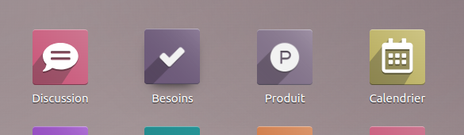

Main Features
-
Needs Submission
Provide your employees with an online plateform to submit their needs and requests easily and efficiently.
-
Approval Workflows
Workflows for needs that require validation. Customize them according to your internal processes.
-
Real-time Request Tracking
View the real-time status of each request. Facilitate communication between employees and managers.
Illustration Images

The image illustrates the needs submission portal.
The image showcases the customizable approval workflow.
The image showcases the customizable approval workflow.